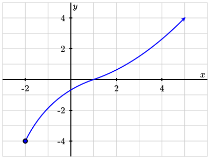
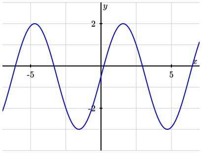

Definition 1.3.1. Domain.
The domain of a function is the set of all input values for which the function is defined.
| Endpoint condition | Interval symbol | Inequality symbol |
|---|---|---|
| Endpoint is included | Square bracket; [ or ] | \(\le\) or \(\ge\) |
| Endpoint is not included | Parenthesis; ( or ) | \(<\) or \(>\) |

